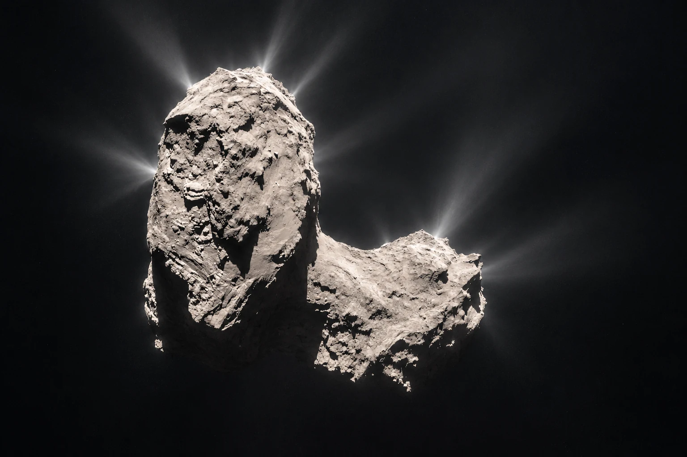
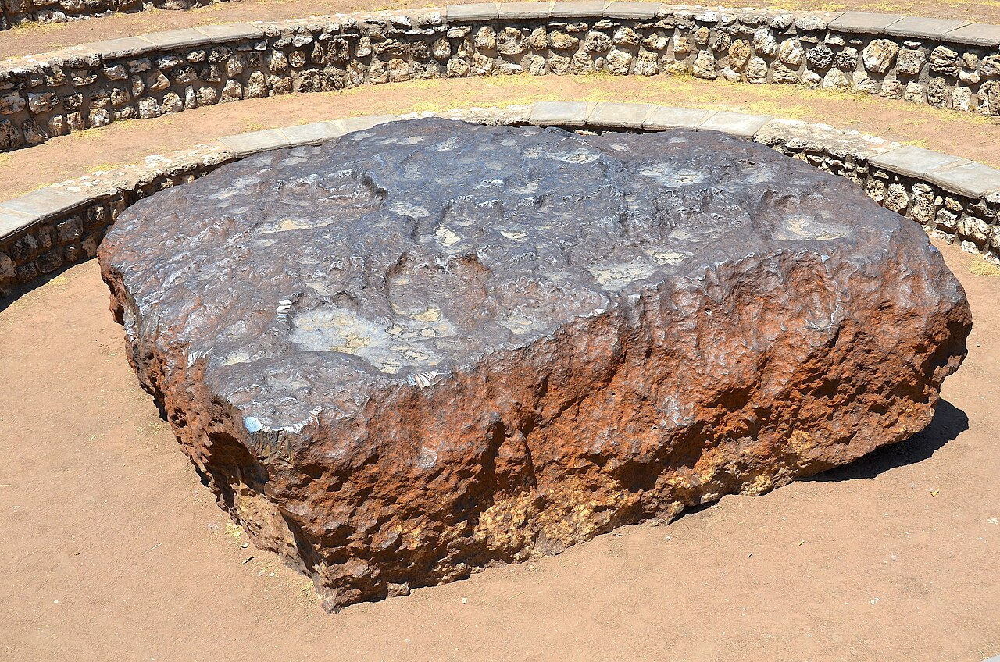

Corpi minori, domande grandi
Una cometa può attraversare un campo stellare con un aspetto sfumato, mentre un asteroide può sembrare un punto indistinguibile da una stella. Quello che vediamo non coincide direttamente con la dimensione del corpo solido. Una grande può circondare un nucleo piccolo; un oggetto relativamente grande e lontano può restare debole. La famiglia dei corpi minori richiede di separare corpo, materiale circostante e rappresentazione fotografica.
Asteroidi, comete e pianeti nani conservano informazioni importanti sulla formazione e sull’evoluzione del Sistema solare. Non sono tutti residui rimasti intatti: collisioni, riscaldamento, attività e interazioni orbitali possono modificarli. Il loro interesse consiste proprio nel confronto fra materiali primitivi e processi successivi, non nell’idea che ciascuno sia una capsula del tempo perfettamente sigillata.
Il termine «minore» non assegna un ruolo didattico secondario. Le missioni che li avvicinano o riportano campioni permettono di studiare proprietà difficili da ricavare da lontano. Le immagini ravvicinate mostrano forme, blocchi e terreni, ma la composizione richiede anche altre misure. Una roccia scura in fotografia non è automaticamente identificabile come un certo minerale.
Asteroidi: forme, popolazioni e orbite
Molti asteroidi si trovano nella fascia principale fra Marte e Giove, ma esistono altre popolazioni, comprese orbite che attraversano o si avvicinano alla regione terrestre. La fascia non è un muro di massi fittamente stipati come in certe scene cinematografiche. Le distanze fra i corpi sono enormi rispetto alle loro dimensioni, e una sonda pianifica comunque la propria traiettoria con dati precisi.
La forma dipende da gravità, resistenza, rotazione e storia collisionale. Alcuni piccoli corpi sono aggregati di frammenti, non blocchi monolitici. La densità e la coesione influenzano la risposta a urti e rotazione. Disegnarli tutti come identiche patate rocciose cancellerebbe differenze scientificamente importanti.
Da Terra un asteroide si identifica seguendo lo spostamento rispetto alle stelle, con immagini o osservazioni a tempi diversi. Una singola ripresa non ne mostra necessariamente un movimento evidente; il moto sul sensore dipende da durata, scala e velocità apparente. Per misurarlo occorre calibrare il campo e conoscere gli istanti delle acquisizioni.
Le orbite si determinano da osservazioni e si aggiornano. Una scoperta iniziale può avere incertezze elevate; nuove misure migliorano la previsione. «Vicino alla Terra» è una categoria orbitale, non l’annuncio automatico di un impatto. Quando si leggono notizie, occorre distinguere distanza di passaggio, incertezza e probabilità calcolata, usando fonti primarie aggiornate.
La forma di un corpo minore non è una libertà illustrativa. La bassa gravità permette molte irregolarità, ma immagini e modelli ne documentano profili specifici. Inoltre la regolite può ricoprire e rimaneggiare il terreno, senza rappresentare tutta la struttura interna. Un confronto fotografico deve indicare se gli oggetti siano ingranditi separatamente: due riquadri uguali non significano due diametri uguali. Prima descrivi ciò che distingue la superficie, poi considera dimensioni, densità e storia. Una somiglianza con un altro corpo suggerisce una domanda, non dimostra da sola stessa origine o stessa composizione.
Una cometa: nucleo, chioma e attività
Il nucleo cometario è un corpo solido che contiene materiali volatili e polveri. Quando le condizioni favoriscono la , parte del materiale passa alla fase gassosa e può trascinare particelle. Si sviluppa una chioma, l’involucro esteso che dà spesso l’aspetto diffuso. La quantità e la distribuzione dell’attività dipendono da composizione, superficie, illuminazione e storia.
Non ogni cometa deve avere una coda spettacolare visibile a occhio nudo. La luminosità prevista è incerta, e un’attività variabile può modificare il risultato. La presenza di un nucleo solido non significa che il punto centrale in una foto amatoriale ne risolva la superficie: spesso è una condensazione luminosa della chioma. La risoluzione e la distanza devono essere considerate prima di attribuire dettagli al nucleo.

Ritrova la fotografia commentata e i suoi riferimenti ↑
La foto permette di riconoscere forma e contrasto della superficie, e materiale che risalta sopra il nucleo. Le ombre dipendono dalla direzione del Sole; le regioni illuminate non sono una mappa diretta della composizione. Confronta questa vista con la chioma che un astrofilo vede da Terra: le due scale raccontano parti diverse dello stesso fenomeno.
La coda non è una scia dietro una corsa
La coda di ioni è legata al gas ionizzato e all’interazione con il e il campo magnetico trasportato. La coda di polveri dipende dal moto dei granuli e dalla pressione della radiazione, oltre che dalla gravità. Le due componenti possono avere forma e direzione apparente diverse. Ridurre tutto a «il vento soffia via gas e polveri» perde una distinzione essenziale.
Nel quadro semplice, la coda ionica segue una direzione approssimativamente opposta al Sole; non deve restare dietro il verso di moto orbitale come il fumo di un veicolo. Allontanandosi dal Sole, una cometa può quindi muoversi in una direzione verso la quale è proiettata anche parte della coda. La coda di polveri può essere curva e la proiezione può produrre configurazioni meno intuitive.
Sposta il nucleo lungo l’orbita e segui la direzione delle code. Cerca il ruolo del Sole, senza immaginarle come una scia lasciata dietro il cammino.
Osserva, confronta, riconosci


Una meteorite è un campione solido: non coincide con il lampo della meteora.
Olga Ernst · CC BY-SA 4.0.La coda racconta il Sole, non soltanto il movimento
Prima scegli un confronto. Poi osserva che cosa cambia e collega l’effetto alla spiegazione.
Il modello richiede JavaScript; il principio e le immagini restano leggibili.
Modello didattico originale AD ASTRA: semplificazioni dichiarate nella figura. Il movimento, quando disponibile, parte solo su richiesta.
Apri il confronto numerico precedente · facoltativo
Confronta movimento e direzione antisolare
Il modello isola le direzioni. Non riproduce la lunghezza o la curvatura delle code, il campo magnetico, la polvere o le tipiche orbite eccentriche. In ogni posizione chiediti quale vettore segue il Sole e quale segue il movimento.
Una fotografia non misura da sola una lunghezza fisica. L’angolo apparente della coda deve essere collegato alla distanza e alla proiezione; un tratto orientato quasi lungo la linea di vista può apparire corto pur essendo esteso. Le esposizioni lunghe rivelano inoltre materiale debole che non risalta all’occhio. Didascalie e aspettative osservative devono mantenere queste differenze.
Pianeti nani e regioni esterne
Cerere si trova nella fascia principale; Plutone appartiene alla regione transnettuniana. Entrambi sono pianeti nani, ma non per questo hanno la stessa composizione e la stessa storia. La categoria dice qualcosa sulla forma e sul ruolo dinamico, non sostituisce una descrizione del mondo. Non tutti i pianeti nani sono oltre Nettuno e non tutti i corpi transnettuniani sono pianeti nani.
Il sorvolo di New Horizons del 2015 ha trasformato lo studio di Plutone mostrando un mondo con terreni e processi complessi. Un testo che lo descrive ancora come mai esplorato è datato. Questo non rende inutile il manuale storico: richiede di distinguere il quadro disponibile quando fu scritto dalle conoscenze successive. La data editoriale è parte del contesto scientifico.
La fascia di Kuiper, il disco diffuso e le popolazioni cometarie hanno orbite e storie differenti. Le comete di lungo periodo motivano il modello della nube di Oort; non abbiamo una fotografia che ne risolva integralmente la distribuzione. Le perturbazioni possono portare corpi nelle regioni interne. Un percorso orbitale attuale non identifica automaticamente l’intera storia di provenienza.
Meteoroide, meteora e meteorite: tre livelli diversi
Un meteoroide è un piccolo corpo nello spazio. Una meteora è il fenomeno luminoso associato al suo ingresso nell’atmosfera, non un nuovo nome del corpo prima dell’ingresso. Un meteorite è materiale che raggiunge il suolo. Il linguaggio distingue oggetto, fenomeno e residuo: non tre classi di sassi ordinate soltanto per grandezza.
Molti sciami meteorici sono collegati a materiali rilasciati da comete, ma esistono anche legami con altri corpi. La Terra attraversa una distribuzione di particelle, non la coda luminosa che vediamo oggi in una fotografia. La macroarea dei fenomeni atmosferici approfondirà radiante, velocità e organizzazione dell’osservazione; qui basta conservare il collegamento fra popolazioni e orbite.
I meteoriti consentono analisi in laboratorio di composizione ed età. Prima di associare un campione a un corpo preciso servono riscontri; trovare una pietra scura non basta a riconoscere un meteorite. Per eventuali ritrovamenti occorre documentare luogo e contesto e rivolgersi a competenze appropriate, senza alterare il materiale o inventarne la provenienza.
Una ricerca osservativa con aspettative realistiche
Per una cometa scegli una previsione recente, verifica coordinate, luminosità stimata, altezza e separazione dal Sole. La magnitudine di un oggetto diffuso non garantisce la visibilità come quella di una stella della stessa magnitudine. Fondo del cielo, dimensione della chioma e contrasto fanno la differenza. Un binocolo a campo ampio può essere appropriato, ma la scelta dipende dall’oggetto e dalle condizioni.
Per un asteroide prepara due immagini o due disegni con un intervallo adeguato e confronta le stelle di riferimento. Conserva data e ora e non confondere un difetto del sensore con un oggetto mobile. Le misure destinate a un uso scientifico richiedono calibrazione e procedure; un esercizio introduttivo può imparare il metodo senza dichiarare una scoperta.
Scrivi la previsione prima dell’osservazione e il risultato dopo. Se l’oggetto non è trovato, elenca le possibili cause invece di cancellare la prova. L’esperienza diventa utile anche senza una foto spettacolare, perché mette alla prova la preparazione e le ipotesi sulla visibilità.
Nome, fenomeno e direzione
Le domande riprendono tre errori frequenti: pensare alla coda come una scia, confondere meteora e corpo, usare una categoria come un’età.
Curiosità: una cometa può sembrare molto grande e avere un nucleo piccolo?
Sì. La chioma e le code sono materiale esteso e tenue, mentre il nucleo solido può essere molto più piccolo. La dimensione apparente della parte luminosa non è il diametro della parte solida.
La lezione conclusiva del Sistema solare collegherà queste famiglie alla formazione dei sistemi e alle leggi che descrivono le orbite.
Questi corpi occupano poco spazio nei disegni, ma conservano domande grandi: da quali materiali siamo partiti e quali trasformazioni li hanno accompagnati fino a oggi?
Fonti e approfondimenti
Testo e schemi originali AD ASTRA. Le fonti indicate sono riferimenti dei concetti trattati; i modelli sono didattici e dichiarano i propri limiti.